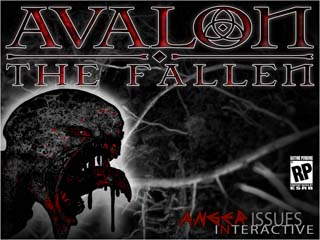
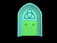
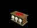
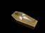
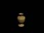

Click on images to open full size view.
Avalon: The Fallen
Sound Effects and Music
Using a combination of Sony Sound Forge 9.0 and Reason 4.0, I created the sounds and music for this game project. I also utilize the UDK engine to place the sounds in the game world to create a unique feel and scene.
Click here to hear Lost Avalon
Click here to hear Vanquished Victory

Assets
Using 3DS Max 2010, I created the church doorway, with its doors and handles. I also made a low (less that 600) poly model of a saint statue.
Misc.
Sandbagger
This game was created to be sold online and help pay for the flood damages that occured in Brisbane in 2011. Sadly the game never got completed, but the two music tracks were successfully made.
Click here to hear the title music
Click here to hear the game track
48 Hour Game making Competition 2010
  Joining the team named 'Anger Issues', we made a film noir styles hack and slash game. Specifically, I created all the sound effects in the game, as well as a number of 3D assets. Shown here are the sarcophagus, vase, shovel, and sacrificial altar. Listen to the music tracks from the game below!
Click here to hear Mourning with the Bones
48 Hour Game making Competition 2009
My first 48 hour game making challenge. In this project I created a single track to be played, as well as the main character model. the model (shown below) was made from scratch to final animation in less than 24 hours.